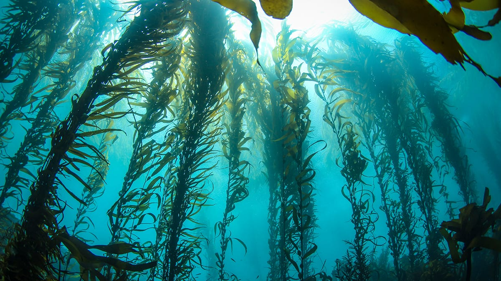

If you want a look at seaweed's potential as a climate change solution, it doesn't get more concise than the paper "Can Seaweed Farming Play a Role in Climate Change Mitigation and Adaptation?" In this article we'll summarise the results and mention some start-ups who have run away with the findings.

In "Can Seaweed Farming Play a Role in Climate Change Mitigation and Adaptation?", Carlos Duarte and Dorte Krause-Jensen's team look into seaweed aquaculture's many climate-positive attributes.
So... according to this paper, how can seaweed help???
1. Seaweed is known for trapping carbon in sediments or deep-sea environments. This is the argument for including seaweed in blue carbon markets. Look no further than our start-up friends over at Running Tide for a case study here.
2. Algae can be used for biofuel production (start-up example: LanzaTech)
3. It can be used to improve soil quality through replacing synthetic fertilizers (AgriSea)
4. Reduces methane emissions in ruminant cattle (Greener Grazing, Seaforest)
5. Plays a role in protecting shorelines through damping wave energy (ReShore)
6. Locally reduces ocean acidification (Australian Seaweed Institute)

It's a brilliant article, and a great place to start when reviewing seaweed's potential. I can almost guarantee you'll notice something new every time you pick this article up. For example, upon rereading, I was reminded that seaweed farming is a relatively CHEAP climate solution. While it may not be able to solve all global warming due to scalability issues, many developing nations cannot afford high-cost solutions like wind turbines. Seaweed provides a cheap alternative.
In addition, one of the salient points concerns raw seaweed prices. If prices deteriorate too much, the only way it is feasible to farm is through seaweed's inclusion in blue carbon markets. There's little issue if you have the right processing facilities to create high-value products and sell to pharmaceuticals. However, in many instances, further declines in seaweed prices will deter farmers and investors from engaging.
It's quite funny to read this article now due to the plain omission of bioplastics. There are several teams now making interesting progress towards bioplastic production using seaweed. Take the Perth-based team Uluu for example, run by the lovely Michael Kingsbury and Julia Reisser. Producing bioplastics from seaweed TRAPS carbon dioxide for the lifespan of the material.
Despite all this, any seaweed expert would encourage a more holistic perspective when reviewing this space. The role in carbon sequestration is interesting, but a technical gap still needs to be overcome. As a result, as these gaps are being addressed, make sure you pay attention to the potential social, economic and health benefits which seaweed can provide. It's much more than just carbon!
Share this:
Tweet